NINA FOLA
ANCESTRALIDADE EM MOVIMENTO
Sobre
Descendente de família histórica do Carnaval de Porto Alegre-RS, Nina Fola se traduz muito mais do que como uma cantora riograndense, é além: mulher de terreiro, porto-alegrense, nascida e criada na tradição do Batuque, do Samba e da Capoeira.
É neta de Paulina Cunha, uma Iyalorixá (mãe de santo), e filha de Pedro e Eunice Cunha, família fundadora do Bloco Trevo de Ouro, que foi tricampeão do Carnaval de Rua de Porto Alegre-RS na década de 60.
'Egbomi' (filha mais velha) da Comunidade Terreira Ilê Asé Iyemonjá omi Olodo desde 1985, trás no seu propósito e responsabilidade algo que transcende a musicalidade e incorpora, em suas composições, uma herança ancestral e cultural, apresentando, como em um encontro, a sua essência: a "cultura afrodiaspórica brasileira".
×


 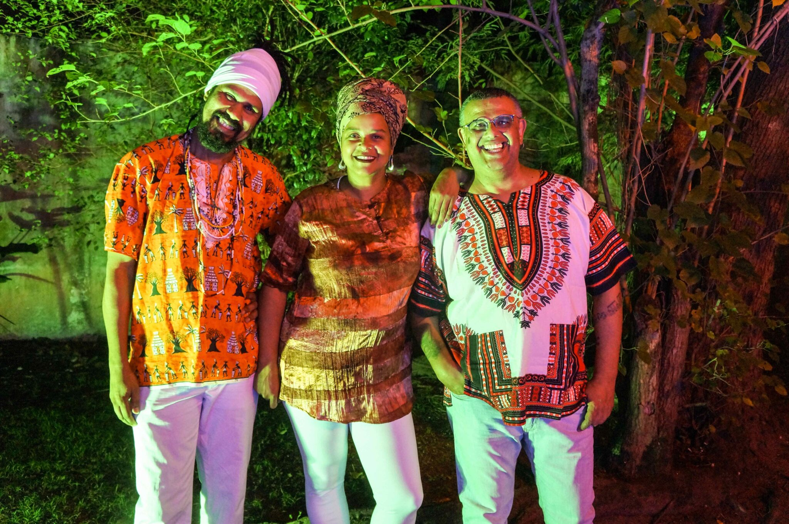
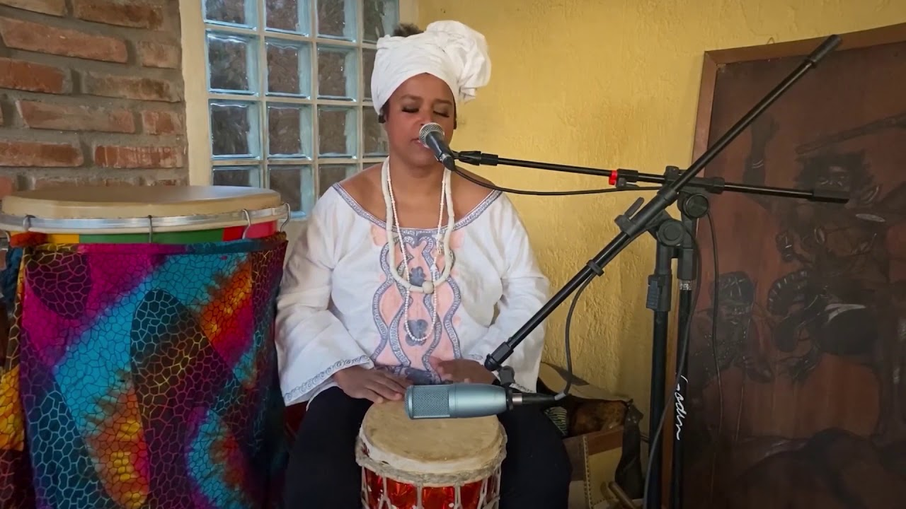
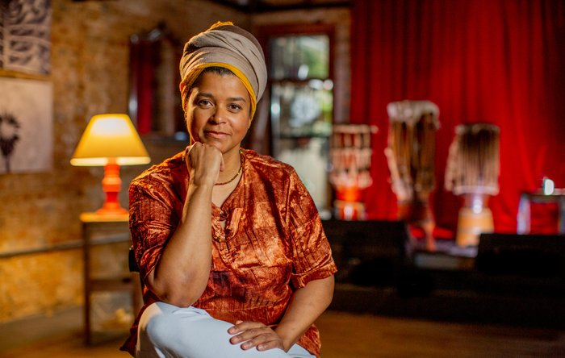
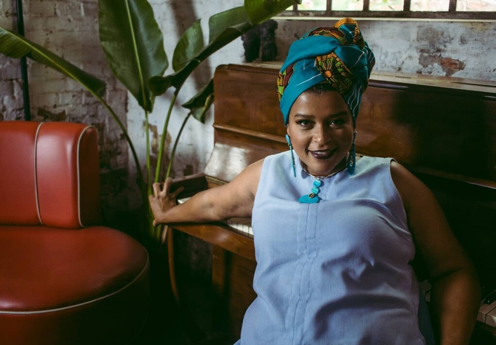
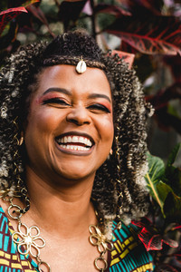
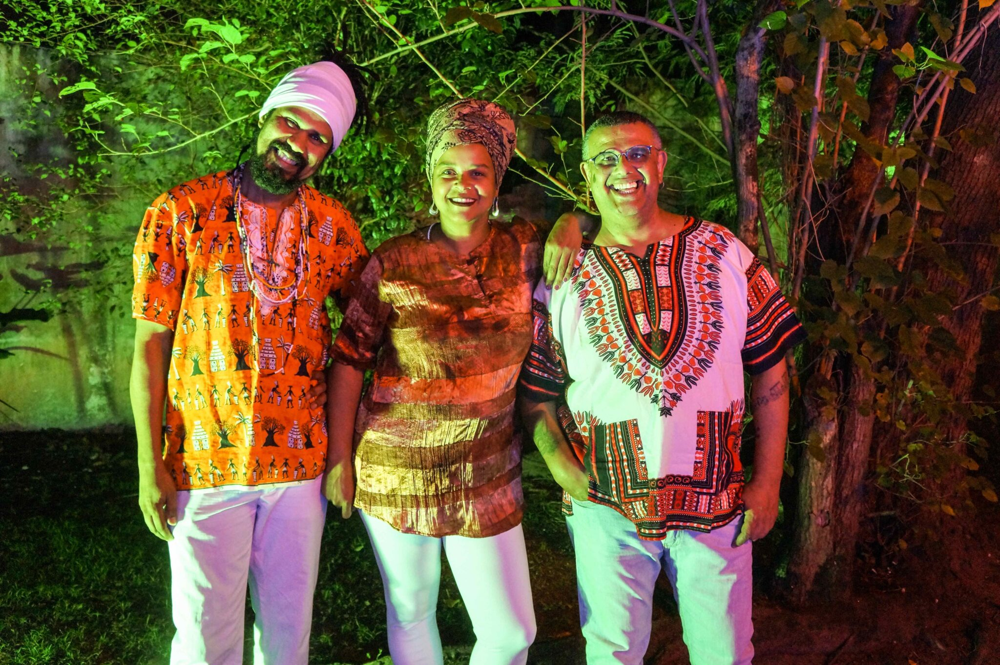
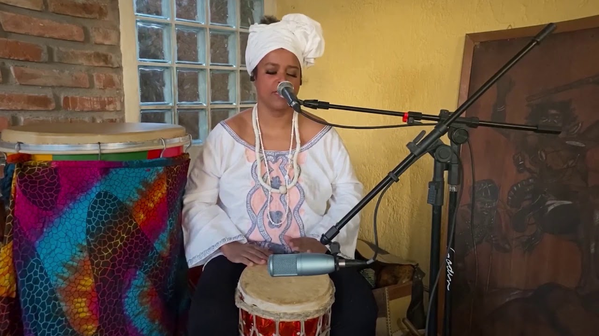
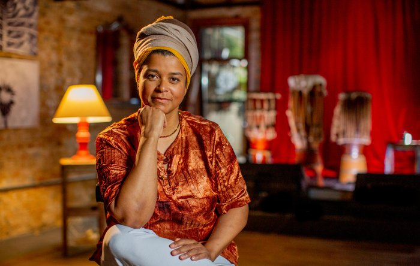
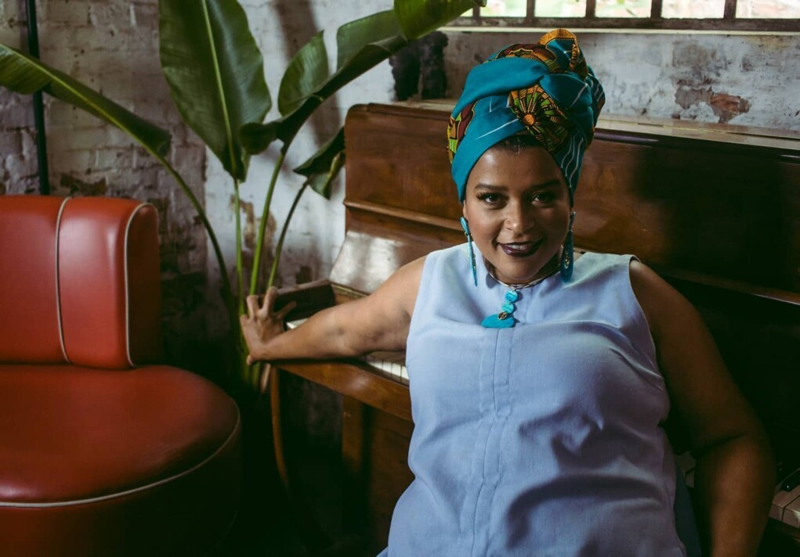
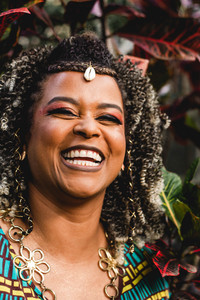
TRAJETÓRIA
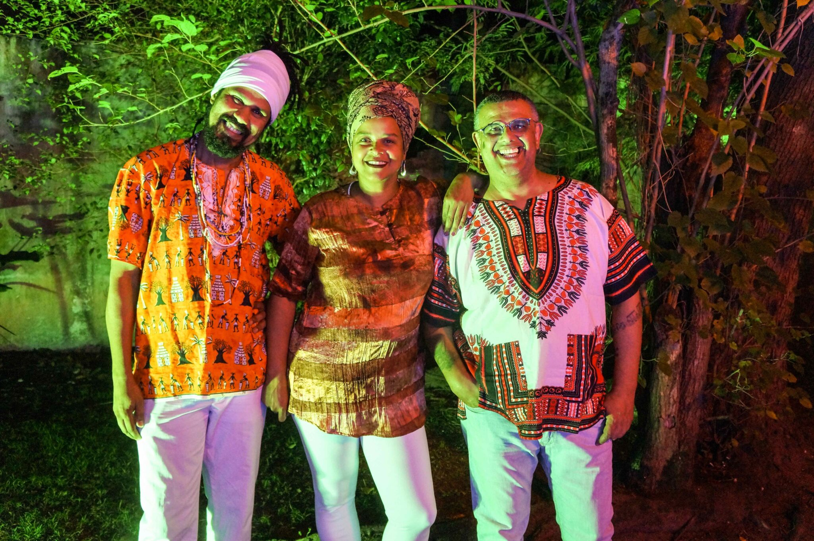
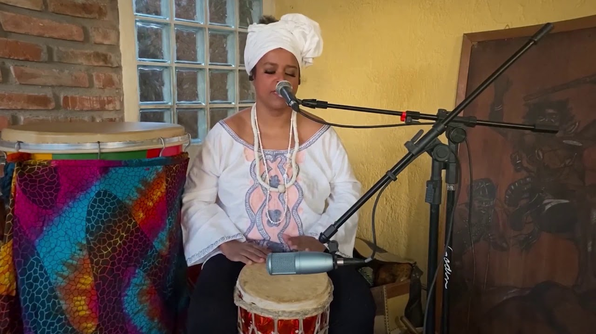
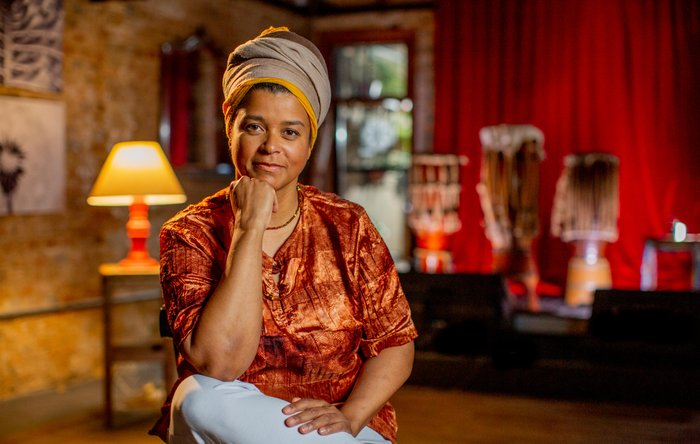
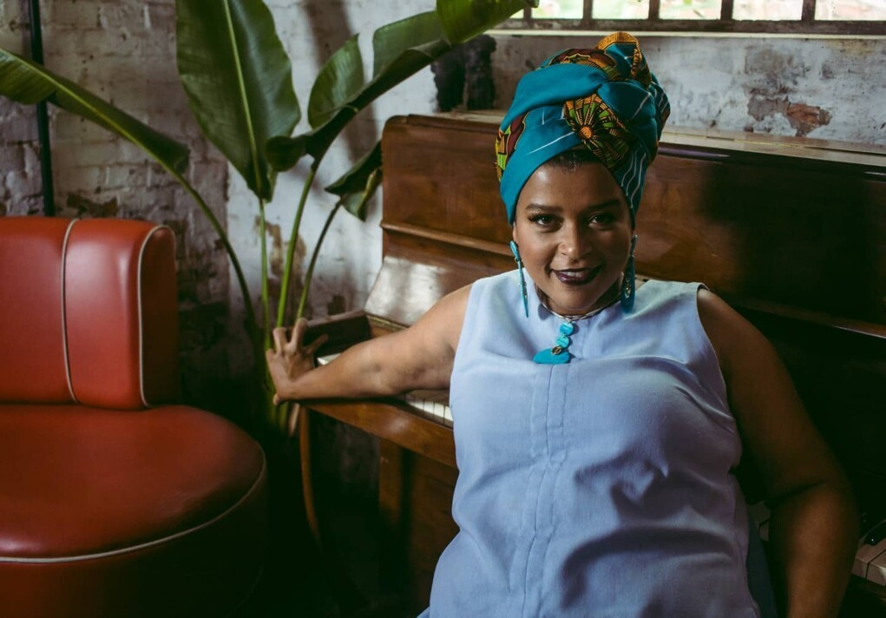
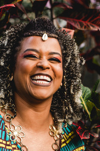
Nina Fola é Socióloga, Bacharela (2018) e Mestra (2020) pela UFRGS, com mais de 25 anos de pesquisa e atuação profissional em diversas frentes artísticas, sociais e políticas, sempre ligada ao movimento e à cultura afrodiaspórica.
Mesmo já estabelecida como cantora, entretanto, é apenas em meados de 2018 que assume e investe-se, de forma mais intensa, na carreira de compositora.
"Angoleira" desde 1988, teve oportunidades de aprender e vivenciar a capoeira viajando pelo Brasil, principalmente para a Bahia. Com ela atuou como educadora popular e pesquisadora em diversas escolas e creches de Porto Alegre-RS e como aluna apresentou-se em diversos eventos, escolas e espaços de cultura e educação pelo Estado.
Ativista e produtora cultural, promoveu eventos, intercâmbios entre Mestres, professores e pesquisadores de Porto Alegre-RS e Salvador-BA, bem como os primeiros eventos com a presença das mulheres capoeiristas de Porto Alegre-RS.
No mesmo período, participou da fundação das organizações "Rabo de Arraia" (com os Mestres Ratinho e Jaburú), da primeira filial da ACANNE/RS - com sede em Salvador-BA (ambas capoeira de angola) e da OSCIP Africanamente.
Desenvolveu seu cantar no Coral da CECUNE (Centro Ecumênico de Cultura Negra) de 1994 a 2002. Com ele viajou em turnê pelo estado do RS e Santa Catarina.
Representando o Coral (1999 e 2000) foi jurada do Prêmio Açorianos de Música e do Festival de Música dos Correios. Em 2001, atuou como modelo da campanha "Eu assumo minha negritude" da Prefeitura de Porto Alegre, fotografada por Irene Santos.
Artista exploratória e eclética, fez sua primeira participação como atriz no grupo Caixa Preta de Teatro, no espetáculo Transegún (2002). Com Jessé Oliveira e a renomada atriz e militante Vera Lopes, também realizou o projeto "recital poético-musical", de enaltecimento à poesia negra, que percorreu espaços e eventos importantes em edições do Fórum Social Mundial de Porto Alegre-RS, Feiras do Livro de Porto Alegre-RS e de Passo Fundo-RS, Semanas de Consciência Negra do interior do Estado, de 2001 a 2003, e a Conferência de Revisão de Durban em Brasília/DF-2008.
Entre os coletivos que integra destacam-se o Coletivo Afroentes, desde 2015, composto por Nina Fola na voz e percussão, Nilson Tokunbó no violão, percussão e vocais, e Edu Iyetumbi Pacheco na percussão - um trabalho fundamentado em ritmos populares afrodiaspóricos de repertório composto por releituras e autorais.
Com ele lançou o "EP Afroentes" em 2017, com sete canções autorais e o Show "Fortaleça seu axé", apresentado no Projeto "Som no Salão/UFRGS - 2018". Além desses, AfroEntes já marcou presença em diversos espaços e eventos culturais de Porto Alegre e região, como a Semana da Consciência Negra de Porto Alegre (2017 e 2020), o Projeto Évora (TSP em 2018), a Virada Sustentável de Porto Alegre (2021), a Noite dos Museus (2019), o Ponto de Cultura Africanamente, o Sopapo Poético, o AfroSul-Odomodê e a Virada Cultural de Pelotas-RS (2017).
No Coletivo Atinuke (2015), sobre o pensamento de mulheres negras, Nina Fola é co-fundadora e a primeira coordenadora administrativa da associação até abril de 2024. Este coletivo forma uma comunidade de mais de 150 mulheres negras, realiza atividades de leituras coletivas da produção textual de mulheres negras, africanas e afro-diaspóricas.
Faz parte também da ODABA - Rede de Afroempreendedores e atualmente é Diretora de Cultura e Filosofia Africana.
Outro projeto musical de grande repercussão em Porto Alegre e no RS é o "lalodê", nome de origem "iorubá", que traduz-se "mãe da sociedade" e é formado por quatro notórias cantoras gaúchas: Loma, Marietti Fialho, Giau Barros e Nina Fola. Faz referência a influência da cultura africana no Brasil e apresenta composições próprias e íntimas da trajetória dessas cantoras.
Atualmente Nina Fola vem sendo chamada com frequência para participações em gravações, CDs, eventos e shows de artistas, como em 2 videoclipes da cantora Dessa Ferreira, em 2023, nas músicas "Obatalá" e "Dois Mundos". Na segunda, a cantora também foi parceira de composição. No mesmo ano gravou o single "E é só", em parceria com Rita Zarth na voz e composição, pela Sigmund Records da UNISINOS.
Entre as participações de maior destaque estão o projeto UNIMÚSICA/UFRGS: em 2019, como musicista convidada do Show Pago Revisitado, e no ano seguinte (pandêmico de 2020), no Festival Forrobodó, como cantora e instrumentista, chegando à curadoria do projeto em 2022.
Ainda em 2024 participou como atriz, cantora e percussionista no espetáculo Zaze Zaze - uma festa para Vavó, com o "UTA - Usina do Trabalho do Ator". Também tem um trabalho com o cantor, instrumentista e compositor Maurílio, pelo qual gravou o single "Atalhos", e que foi contemplado pelo "Projeto Ecarta Musical" 2023/2.
Atualmente dedica-se a sua carreira solo, com projeto contemplado no Itaú Rumos chamado Igbá Awo e ao projeto "Cavalo de Idéias", que visam "o despertar da ancestralidade negra através do corpo, da palavra e da música".
PREMIAÇÕES:
- Melhor Intérprete e 1º colocada geral, com a música "Inspiração", no Festival de Música de Viamão (FEMUVI) - 1988
- Melhor intérprete e 2ª colocada geral com "Punhal", no Festival da CUT - 2001
- Prêmio Guerreiros "Axé, Arte e Cidadania" - 2018
- Melhor Trilha Sonora de curtas em Gramado, Filme TEMPO, pela Assembleia Legislativa de Cinema - 2023
- Melhor Atriz - "Zaze Zaze: uma festa para Vovó" - "UTA Teatro", XII Prêmio Olhares da Cena - 2023
- Honra ao mérito da Ordem dos Músicos do Brasil - 2024
- Prêmio Mulheres Negras em Destaque - Câmara de Vereadores de Porto Alegre - 2024
- Homenageada pelo Neabi Mãe Fausta - Unipampa Campus Uruguaiana - 2024
Projetos

Atalhos
Maurilio * Nina Fola (2023)
Artigos
Vídeoclipes
Selecione um vídeo